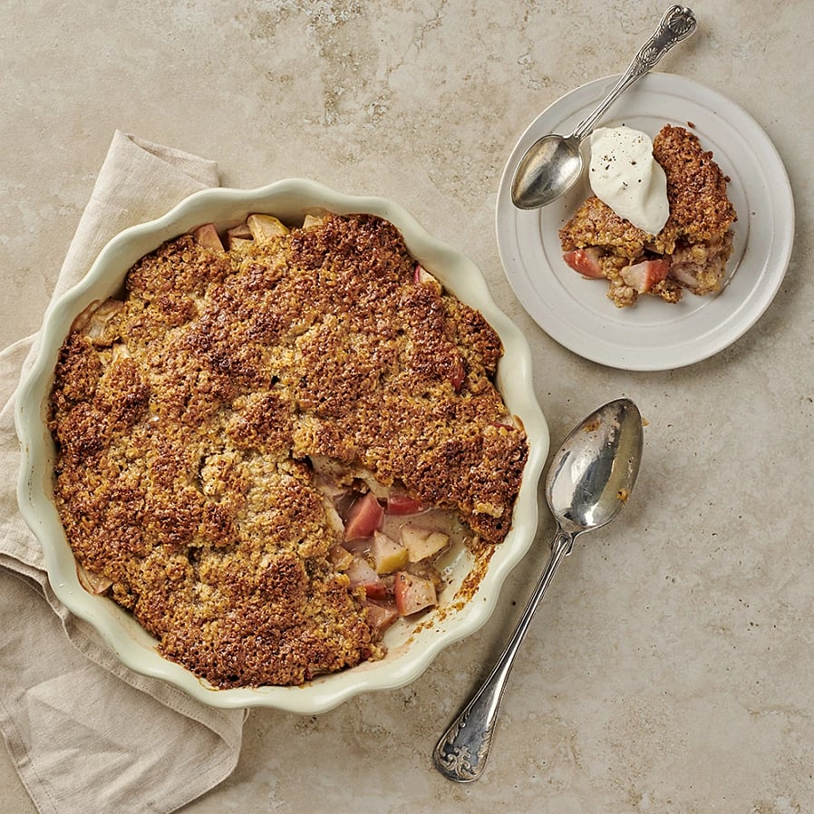

Smaskig glutenfri äppelpaj
Ibland kan det simplare alternativet vara det bästa, och en riktigt god äppelpaj säger väl ingen nej till.

Så här gör du:
- Sätt ugnen på 200°C.
- Skär äpplena i små tärningar, 1-2 cm stora, och lägg dem i en pajform, ca 27 cm i diameter (för 8 port).
- Mortla kardemummakärnorna.
- Smält smöret i en stor kastrull tillsammans med kardemumman.
- Tillsätt socker, sirap och grädde och ta av från värmen.
- Rör ner nötmjöl och havregryn och rör till en slät massa.
- Bred ut den över äpplena och sätt in i nedre delen av ugnen ca 25 minuter.